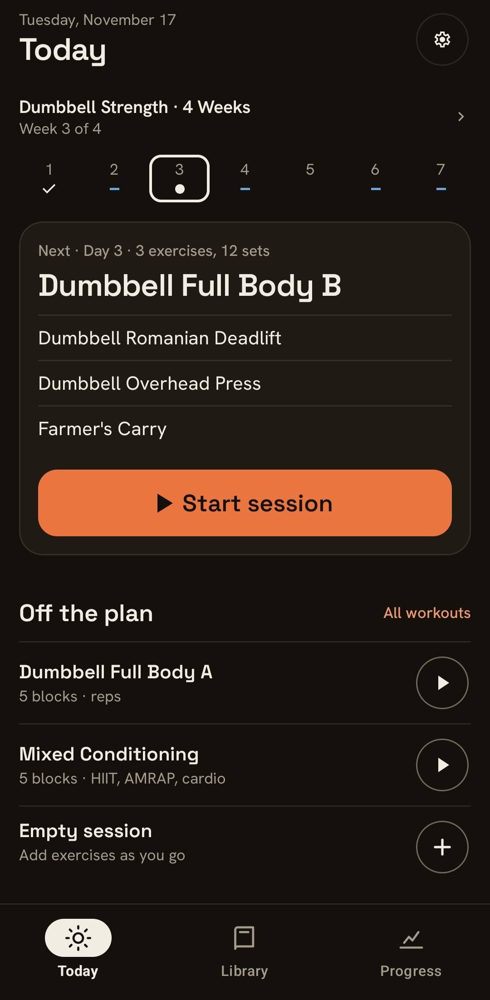
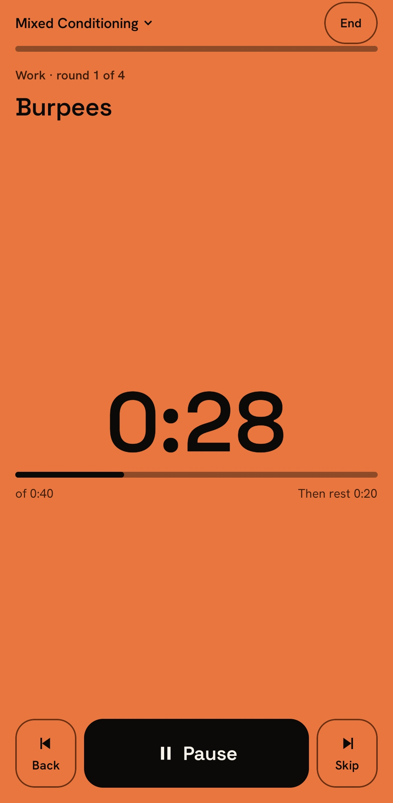
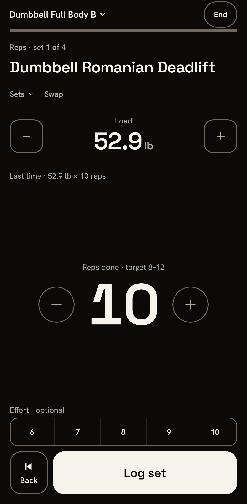
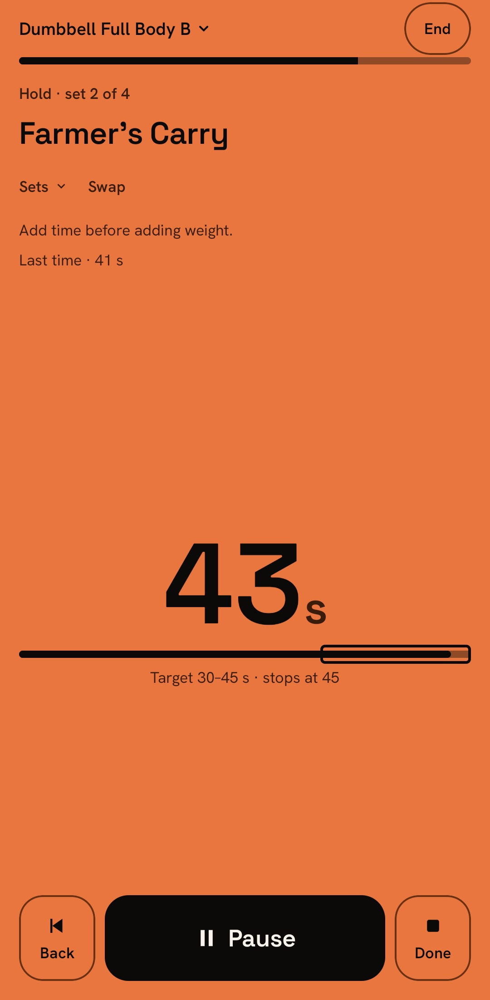
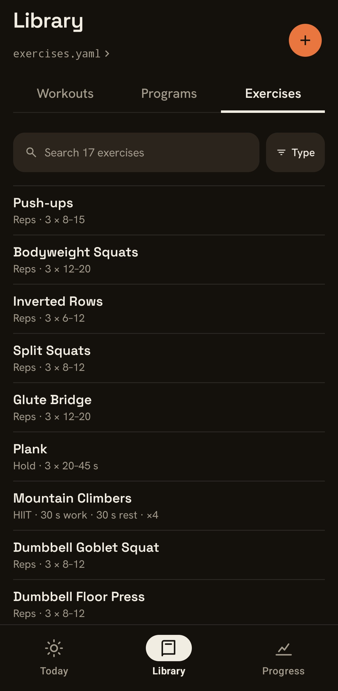
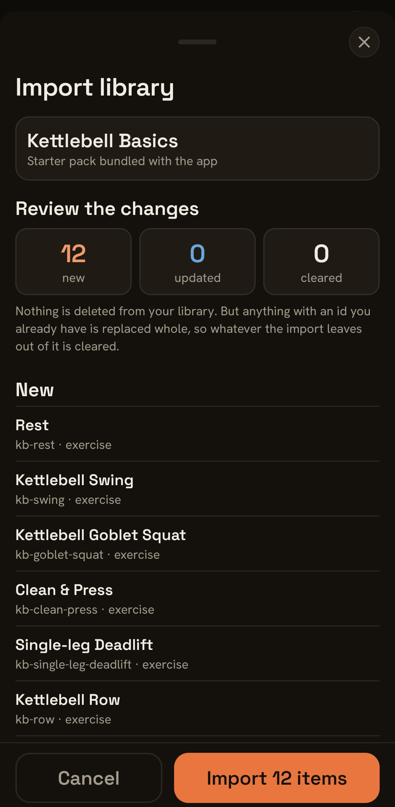
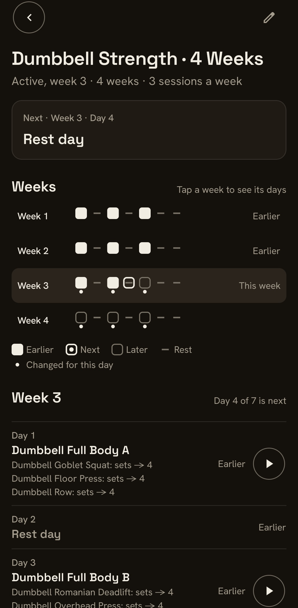
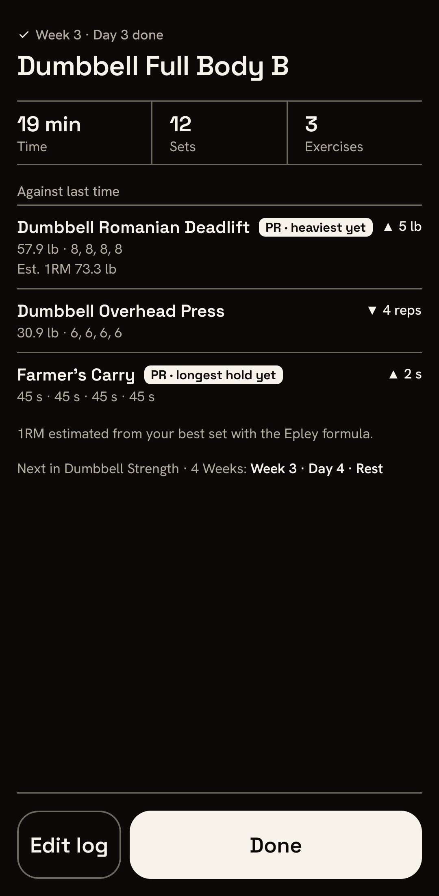
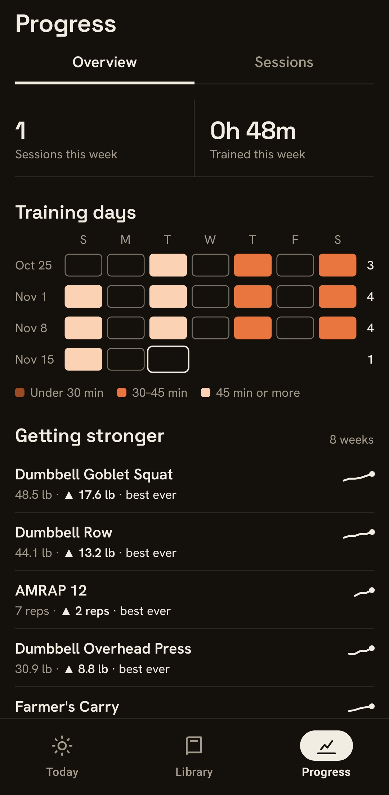
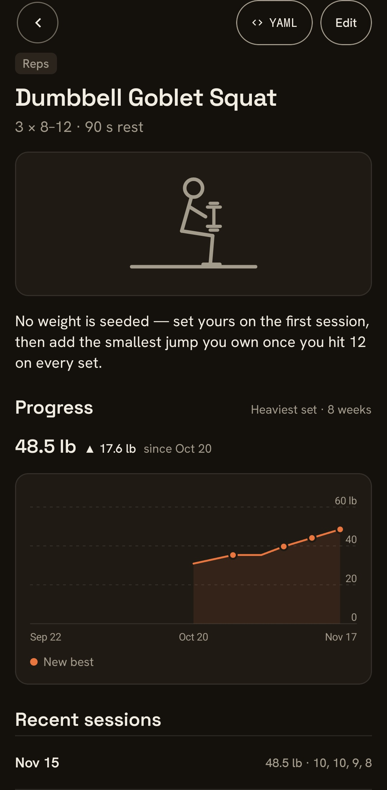

Workout tracker · Android
Your training, in a file you own.
Your exercises, workouts and multi-week programs are a plain YAML file on your phone. Edit it in the app, open it in any text editor, or ask an AI assistant to write you a program and paste the result in — Kettle validates it on the device and shows exactly what would change before anything is saved. Then it runs the session: reps, HIIT, EMOM, AMRAP, timed holds and cardio on one wall-clock engine. Your data never leaves the device.
version: 1
exercises:
- id: back-squat
name: Back Squat
type: reps
config:
sets: 5
target_reps_min: 5
target_weight: 100
rest_sec: 180
notes: stop 2 reps shy of failure
- id: burpees
name: Burpees
type: hiit
config:
work_sec: 30
rest_sec: 15
rounds: 8
workouts:
- id: lower-a
name: Lower A
blocks:
- type: exercise
exercise: back-squat
- type: exercise
exercise: burpees
programs: []
What it does
A runner that keeps up with the session you're actually having.
One session, every kind of work
Lifting and conditioning run on the same timer. Reps sets take a load, a count and, if you want, an effort; timed blocks — HIIT, EMOM, AMRAP, holds — run a live clock, a HIIT round says what comes after it, and the whole session is a tap away under its name. Timing is anchored to the wall clock, so it survives you leaving the app, and audio cues mean you rarely need to look at the screen.
The screen says whose clock it is, so a glance from across the room is enough: black while you set the pace, orange while the clock runs the work, blue while you rest.
- You set the pace8
- The clock runs the work0:38
- Rest1:26
It bends, too. Add a set when you have another one in you, drop one when you don't, or swap an exercise when the rack is taken — mid-workout, without editing anything. Walked in with no plan? Start an empty session and add as you go.



The library, as YAML
Your exercises and workouts are one editable file. Read it, diff it, keep it in a repo, edit it in any text
editor. Import takes a file or pasted text and merges by id, so you can accept a
library from anywhere without losing your own log. Export the whole thing whenever you want.
Read the format reference →
Or start from a ready-made library →


Multi-week programs
Group workouts into a program that runs across weeks, with per-week overrides — add a set, bump a target, swap a block — expressed as diffs against the base workout. Kettle queues the next day for you; the file stays the source of truth.

It remembers what you lifted
The set row shows what you did last time — "60 kg × 8", on the set you're on — and one tap makes it the new target, written back to your library so next week starts there. Beat your best and the row says so; finish and the summary names the record, with an estimated 1RM for loaded sets.
All of it is read back on the device from your own log: every finished set goes there with the date and what you actually did, nothing is uploaded, and you can export the whole thing as plain data any time.
Tapped the wrong number? Open the session in Progress and correct it — the reps, the load, the effort, the seconds you held — or take out a set you didn't do. Fixing one bad figure shouldn't mean deleting the session it sits in.



Seven exercise types
Each type is a shape of block, with its own config fields.
-
reps
Sets of counted repetitions, with load and an optional target range.
-
hiit
Alternating work and rest intervals over a number of rounds.
-
emom
Every minute on the minute — a fixed task at the top of each minute.
-
amrap
As many rounds or reps as possible inside a time cap.
-
timed_hold
Hold a position — planks, hangs, carries. Ends itself at the target, or runs to failure without one.
-
cardio
A continuous effort tracked by time or distance.
-
rest
An explicit rest block between efforts, timed to the second.
Bring your own assistant
Generate a program elsewhere. Paste it straight in.
Because the library is a documented YAML format checked against a strict schema on import, any AI assistant can write a valid program for you. Give it the format reference, describe your training, and paste the result into Kettle.
Kettle itself has no AI features and never calls a model. This works because the format is open and legible — not because anything phones home.
Open the format referenceThe app collects nothing and calls no external service, including no model. Whatever an assistant produces is checked against the schema on import, on your device.
Paste the format reference — or point the assistant at this site — so it knows the file shape and the seven types.
Describe your goal in plain words: “a 4-week push/pull/legs program, dumbbells only, 40 minutes.”
It returns YAML. Import it into Kettle, which validates against the schema and merges by
id.
Edit anything by hand afterwards. The file stays yours to read and change.
Your data
Your data never leaves the device.
Kettle is backend-free by design. There is no account to create and no cloud to trust, because there is no cloud. The competitors sync to a server; Kettle keeps your training where you can see it.
No account
Install and start. There is no sign-up, no email, no password to reset.
No server
The app has no backend to talk to. Your library and log live in local storage on your phone.
Export anytime
Pull your whole library or your session history out as plain files whenever you want. It's yours.
Nothing tracked
Zero analytics and zero trackers. The app makes no network requests of its own — the tip jar's Google Play Billing is the one exception — and this site makes none either. The one optional reminder is a notification on your own phone, off until you turn it on.